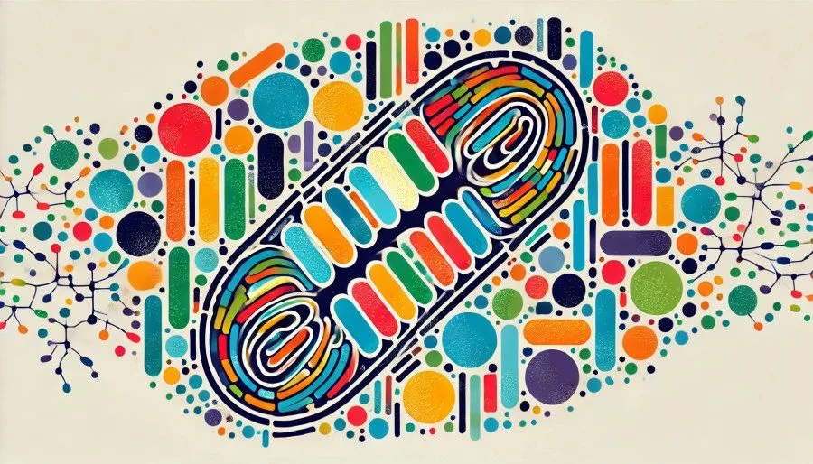

長壽的秘密-優化粒腺體

粒腺體mitochondria是我們細胞內的小型發電廠，產生能量分子ATP (Adenosine Triphosphate)。我們每個細胞內含有不只一個粒腺體，尤其是那些能量代謝較高的細胞，例如肌肉或心肌細胞，每個細胞可能含有成千上萬的粒腺體。粒腺體的健康與我們的代謝密切相關，我們可以在一些代謝不良的疾病患者身上發現粒腺體數量的劇減。當粒腺體運作良好時，身體的各種功能，包括運動、消化和恢復，都會更有效率。除了能量生產，粒腺體還參與信號傳遞（ signaling）、調節細胞代謝（cell metabolism）以及細胞凋亡（程序性死亡，apoptosis），這些功能對於維持細胞穩定性至關重要。
ATP的生成是粒腺體活動的基本特徵。這一過程通過兩個主要的生化途徑進行：檸檬酸循環（Citric Acid Cycle or Krebs Cycle）和電子傳遞鏈（ETC，Electron Transport Chain）。檸檬酸循環包含十個步驟，每一步都受B族維生素（B vitamins）、某些礦物質如鎂（magnesium）和鐵（iron）以及肝臟主要抗氧化劑谷胱甘肽（glutathione）的影響。這在電子傳遞鏈中，氫離子（H+）被釋放到粒腺體的膜間隙中。釋放的氫離子再通過ATP合酶（ATP synthase）返回粒腺體內部。在這個過程中釋放的能量被ATP合酶用來將用於能量的ADP（Adenosine Diphosphate）再次轉化為ATP。
會影響我們粒腺體健康的因素，除了基因以外，我們可以改變的是非常多的。
第一，降低氧化壓力（oxidative stress），雖然低水平的ROS（Reactive Oxygen Species）在細胞信號傳遞中起作用，但過量的ROS會對粒腺體蛋白質、脂質和DNA造成氧化損傷。粒腺體是氧化損傷的主要受害者，過量生產的ROS會導致細胞遭受氧化應激，破壞蛋白質、脂質或DNA等細胞成分。
第二，身體活動會影響粒腺體的數量和質量，運動可以刺激粒腺體生物生成（mitochondrial biogenesis），增加粒腺體的密度和能量生產效率。尤其是耐力訓練（endurance training）可以增強粒腺體的氧化能力，提高其利用氧氣產生ATP的能力。
第三，富含營養素的飲食可以增強能量生產並減少氧化壓力。使身體進入酮症狀態（ketosis）也可能增加粒腺體生物生成並提高粒腺體效率。不管是有氧運動（aerobic exercise）、高強度間歇訓練（HIIT，High-Intensity Interval Training）或是阻力訓練（resistance training），都可以使細胞內的粒腺體數量顯著增加。
第四，暴露於環境壓力源（environmental stressors），如毒素（toxins）、污染物（pollutants）、重金屬（如鉛、汞、砷和鎘）和輻射，會對粒腺體功能產生不利影響。這些壓力源會引起氧化損傷，破壞電子傳遞鏈活動，並損害粒腺體動態，包括融合（fusion）和分裂（fission）過程。
相對於健康的粒腺體生成，健康的粒腺體凋亡也是同等重要的。老化的粒腺體顯示ATP生成減少，這會影響細胞健康所需的能量驅動過程。粒腺體DNA（mtDNA，mitochondrial DNA）位於電子傳遞鏈附近，這使其更容易受到突變的影響。隨著時間的推移，突變累積，導致粒腺體功能失調。與核DNA不同，mtDNA缺乏組蛋白的保護性包覆（protective histone coverage），也沒有多種修復機制，因此容易受損。因為受損的粒腺體只會產生更多的ROS，從而增加細胞衰老，形成一個惡性循環。粒腺體功能失調與神經退行性疾病（neurodegenerative diseases）、心血管疾病（cardiovascular diseases）和代謝紊亂（metabolic disorders）等情況有關。在這些疾病中，能量生成減少或缺陷、氧化壓力增加和無法清除受損的粒腺體是疾病發病機制和進程中的關鍵因素。
粒腺體自噬（mitophagy）是選擇性自噬（selective autophagy）的一種形式，通過僅降解受損或失去功能的粒腺體，對細胞狀況起著重要作用。這一機制對粒腺體和細胞的健康至關重要。研究表明，卡路里限制（caloric restriction）可以促進粒腺體自噬。這部分是因為啟動了長壽蛋白（SIRT1，Sirtuin 1）、AMP激活的蛋白激酶（AMPK，AMP-activated protein kinase）和轉錄因子EB（TFEB，transcription factor EB），這些因子支持細胞能量危機反應和粒腺體自噬的啟動。間歇性禁食（intermittent fasting）也可以增強粒腺體自噬。
對粒腺體有利的保健品包括輔酶Q10（Coenzyme Q10）、鎂（magnesium）、B群維生素（B vitamins）、α-硫辛酸（alpha-lipoic acid）、肉鹼（carnitine）、肌酸（creatine）、Omega-3、薑黃素（curcumin）、硒（selenium）等。此外，生物駭客（biohackers）會利用一些特殊的方法強化自身的粒腺體功能，例如紅光療法（Red Light Therapy）、脈衝電磁場治療（PEMF，Pulsed Electromagnetic Field Therapy）、高壓氧療法（HBOT，Hyperbaric Oxygen Therapy），藉由減少氧化壓力和改善細胞能量代謝的方式促進粒腺體生物生成。
我們將能夠刺激粒腺體分裂增生的物質稱為粒腺體解偶劑(Pro-mitochondria uncouplers)，會抑制粒腺體分裂的物質稱為抗粒腺體解偶劑(Anti-mitochondria uncouplers)。我們常見的粒腺體解偶劑(MUCs)有間歇性禁食、限時進食、游離脂肪酸、褪黑素、多酚、多胺、短鏈脂肪酸、中鏈甘油三酯、酮類、活性氧（適量）、運動、禁食、薑黃素和小檗鹼。常見的抗粒腺體解偶劑(antiMUCs)有糖、β受體阻滯劑、NSAID止痛藥、抗生素、抗酸劑、草甘膦和藍光。
優化粒腺體健康及其隨著年齡衰退是一項挑戰，結合科學知識和可行的生活方式改變的綜合方法，可以創造有利條件，預防和減緩粒腺體損耗，從而提升個人的健康和壽命。
 空腹小雞跟思思醫師一起斷食，順便養一隻小雞來養小雞 →
空腹小雞跟思思醫師一起斷食，順便養一隻小雞來養小雞 →
好朋友週信
一週一封：《健康駭客週報》這集的研究重點，加上家醫專欄這週的新文章。免費，隨時可以退訂。